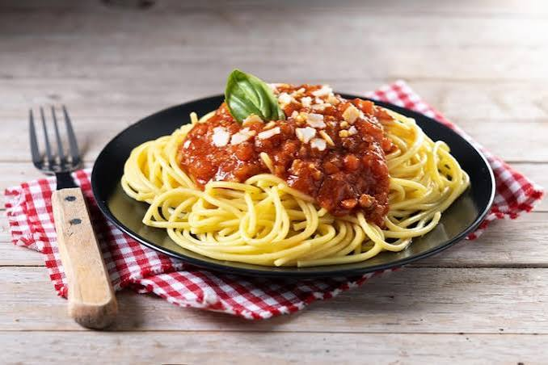

Pasta Bolognese
Home Page

Description
Everyone needs a great everyday Spaghetti Bolognese recipe, and this is mine! The Bolognese Sauce is rich, thick and has beautiful depth of flavour. It’s perfect for a quick midweek meal but even better if you can simmer it for a couple of hours! Serve it over pasta, stuff into jacket potatoes, make an epic Lasagna or Baked Spaghetti Pie!
Ingredients
Ingredients
- Beef
- Thyme
- Bay leaves
- Sugar
- Red wine
- Tomato
- Onion & garlic
Recipe
1. Worcestershire sauce: it just adds that little extra something-something. I get antsy if I get caught in a situation where I have to do without;
2. Beef bouillon cubes (beef stock cubes) for extra depth of flavour in the sauce, to compensate for this being an everyday midweek version rather than a traditional slow cooked Bolognese Ragu which starts with a soffrito (onion, celery, carrot slowly sautéed) as well as pancetta.
3. Sugar, if needed: just a little bit goes a long way to transform the sauce if you happen not to be using high quality, sweet Italian canned tomatoes. Supermarket canned tomatoes here in Australia are notoriously sour. Especially the Australian ones – it pains me so much to say that, but it’s true.